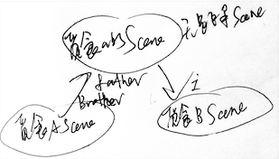
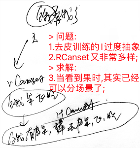

AI系列之《2023.06-08：防撞觅食融合与去皮任务》

来源：HELIX_THEORY/手稿/assets/707_觅食任务的知识表征图.png

来源：HELIX_THEORY/手稿/assets/708_去皮任务的知识表征图.png
来源：Note30.md
6 到 8 月，系统从单项训练进入组合任务：回测防撞、回测觅食、防撞觅食联合训练，并开启去皮训练。
防撞与觅食的融合，是典型的多目标冲突：既要接近食物，又要避免危险。7 月的 TCRefrection 反思、多任务循环问题、TI/TO 双线程，都是为了解决复杂任务中输入识别与输出决策之间互相打断、互相等待的问题。
去皮训练则把任务复杂度推高一层。它不再只是“飞到坚果并吃掉”，而是需要形成动机、识别工具/对象关系、学习去皮步骤，并将这些步骤组织成可复用 Canset。